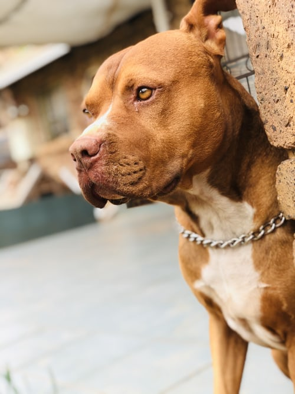

Tipos de razas de perros pitbull - con imágenes
Muchas personas tienden a ver al pitbull como una de las razas de perros más peligrosas. Sin embargo, esta creencia no es más que una visión errónea, puesto que un perro será peligroso o no en función de la educación y la atención que le preste su dueño. Además de esto, también hay quienes desconocen los tipos de razas de perros pitbull y piensan que se trata solo de un perro con las mismas características. En este artículo de un. COMO vamos a hacer un repaso por los tipos de razas de perros pitbull con fotos para que conozcas todas las que hay, así como las características que definen a cada uno de ellos, ¡te sorprenderás! La raza pitbull: De dónde viene American pitbull terrier Staffordshire bull terrier American staffordshire terrier Bull Terrier Cobra Blue nose pitbull Red nose pitbull American bully Colby Chamuco o pitbull mexicano Pynat Spike Game ¿Son peligrosos los perros pitbull?
Nuestra Historia
Así empieza Lola, una perrita que afronta la recta final de su vida con los recuerdos de su existencia. A lo largo de ellos, Lola, en primera persona, nos hace un repaso de sus vivencias, de cómo ha ido conociendo y aceptando nuestro mundo, de sus relaciones con nosotros: «los humanos» —como ella nos llama—, de cómo ha conseguido entendernos, disfrutarnos y ayudarnos a tener una vida mejor. Pero también describe situaciones que, siendo para nosotros cotidianas, para ella —o para cualquier otra mascota— son a veces incomprensibles, y a pesar de ello tiene que aprender a sobrellevarlas. Este libro aporta una visión nueva respecto a nuestra relación con las mascotas; o mejor dicho, la relación de las mascotas con nosotros y nuestra sociedad al estar escrito desde la perspectiva de Lola en primera persona. Todo aquel que tenga, o haya tenido, y ame a las mascotas debe leerlo, y seguro que después tendrá, si cabe, más pasión todavía por ellas.